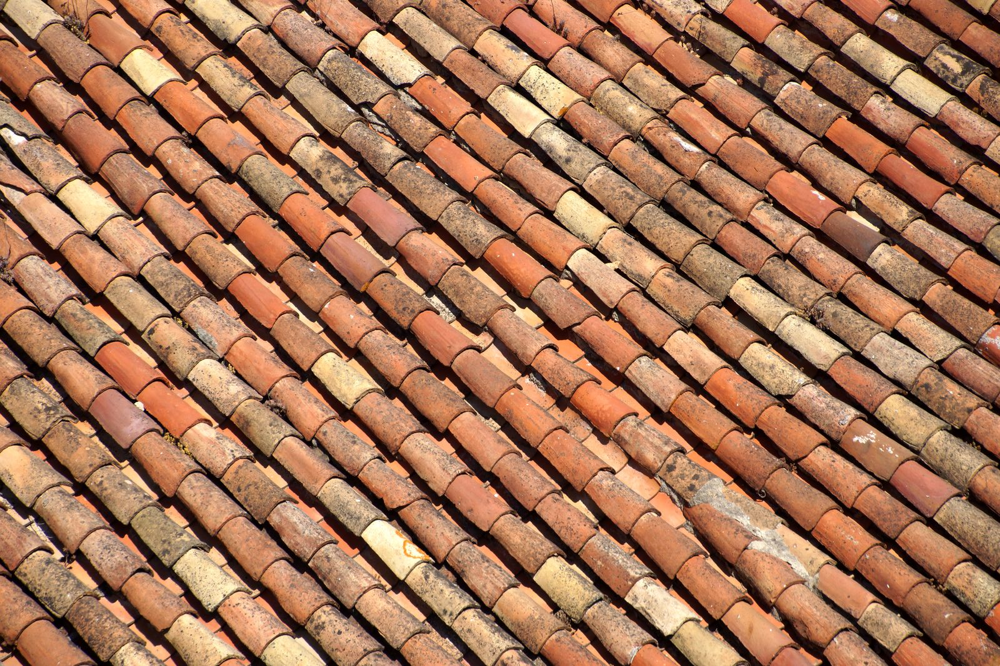

St Cuthbert's Church, Burgh le Marsh
- Tiles
- 6,400 new, bespoke match · 4,900 originals re-laid
- Clay & firing
- Oxford clay, 8% grog · 1,020 °C
- Building
- Grade I parish church — nave, south slope
- Tile cost
- £28,800 at £4.50 per matched tile
The brief
The south nave slope was failing the way clay tiles fail in this county: not by breaking, but by frost. Water had soaked into the tile faces for a century; hard winters had shelled the surfaces off, course by course, until roughly four tiles in ten on the slope were spalled through. Rain was reaching the battens.
Because the church is Grade I, replacement needed a faculty, and the faculty required like-for-like: same material, same profile, same colour range. A machine-made tile was never going to be approved, and the parish did not want one.
Decisions
The match was made from three broken tiles taken off the slope itself — clay blend adjusted twice, then a test firing of twenty-four tiles, six of which went to the churchwarden to be held against the roof in daylight.
Stripping showed 4,900 of the original tiles were still sound. Those were graded and re-laid on the lower, most visible courses; the new tiles went higher, where the weather is worst and the viewing distance is longest. Bedding was lime mortar throughout, matching what came off. The new tiles were fired in three graded tones and mixed on every pallet, so no course reads as a patch.
Outcome
Eleven weeks on the roof, completed October 2024, with services running underneath throughout. The faculty was signed off without amendment. At the autumn 2025 inspection — two winters on — not one replacement tile had spalled, lifted or cracked. The churchwarden's own account is quoted on the yard page.
